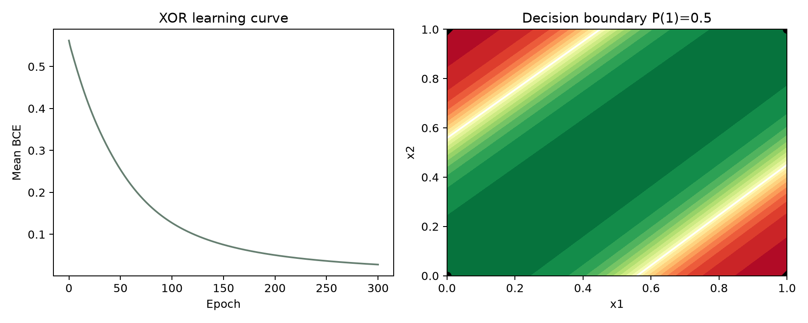

MAKO · LEARNING NOTES / ASSIGNMENT 02
MLP 学习参数的实现与可视化
——基于 XOR 的实验报告
本作业复现课程中的 2→2→1 MLP，使用 Sigmoid、二元交叉熵和 Adam，以学习率 0.03 训练 300 轮。四个 XOR 训练样本的准确率从 50% 提升到 100%，平均 BCE 从 0.561960 降至 0.027927。网页实现可交互展示参数、梯度、决策边界和损失，另附可运行的 PyTorch 与 TensorFlow 脚本。
一、实验任务与目标
根据“第二篇 15 节 MLP 学习参数的实现和可视化，并展示在自己的网站上”的要求，完成从数据、模型、损失、反向求导到参数更新的完整流程。以 XOR 为例，解释单层模型的局限，以及隐藏层如何形成非线性表示。
作业展示地址：https://pwicdsummer.github.io/mako-agent-report/mlp/；第一次作业的首页设有第二次作业入口。
二、数据、网络与超参数
输入顺序为 (0,0)、(0,1)、(1,0)、(1,1)，标签依次为 0、1、1、0。四个样本整批训练，无独立验证集或测试集。判断规则为 P(1) ≥ 0.5 输出 1，否则输出 0。
X = [[0,0], [0,1], [1,0], [1,1]] y = [[0], [1], [1], [0]] W = [[2, -2], [-2, 2]] b_hidden = [-1, -1] v = [[3], [3]] b_output = [-2.5] 网络：2 个输入 → 2 个 Sigmoid 隐藏单元 → 1 个输出 优化：Adam；η = 0.03；β₁ = 0.9；β₂ = 0.999；ε = 10⁻⁸ 精度：float64；轮数：300；批量大小：4；参数数：4 + 2 + 2 + 1 = 9
W 的行对应输入特征、列对应隐藏单元，与课程的 XW 写法一致。网页没有调用预训练模型；所有参数均通过当前实验的真实梯度更新。
三、学习参数的方法
1. 前向计算与二元交叉熵
H = σ(XW + b_hidden) z = Hv + b_output，p = σ(z)，σ(u) = 1 / (1 + exp(−u)) L = −(1/N) Σ[yᵢ ln pᵢ + (1−yᵢ) ln(1−pᵢ)]，N = 4
实际计算采用对数几率上的稳定形式 L = mean(max(z,0) + log(1 + exp(−|z|)) − yz)，避免直接对接近 0 的概率取对数。
2. 反向传播
δ_output = (p − y) / N ∂L/∂v = Hᵀδ_output，∂L/∂b_output = Σδ_output δ_hidden = (δ_output vᵀ) ⊙ H ⊙ (1−H) ∂L/∂W = Xᵀδ_hidden，∂L/∂b_hidden = Σδ_hidden
反向传播依据链式法则求梯度；求梯度本身不改变参数。PyTorch 使用 loss.backward()，TensorFlow 使用 GradientTape，网页在 core.js 中显式实现以上公式。
3. Adam 更新
gₜ = ∇L(θₜ₋₁) mₜ = β₁mₜ₋₁ + (1−β₁)gₜ sₜ = β₂sₜ₋₁ + (1−β₂)gₜ² m̂ₜ = mₜ/(1−β₁ᵗ)，ŝₜ = sₜ/(1−β₂ᵗ) θₜ = θₜ₋₁ − η m̂ₜ/(√ŝₜ + ε)
这里使用 s 表示 Adam 的二阶矩，以免与网络输出权重 v 混淆。所有梯度均先根据同一组旧参数计算，再一次性更新各参数。每轮记录的是更新后的损失，另保留第 0 轮的初始状态。
4. 一次可检查的数值更新
初始 W₁₁ = 2，平均损失对它的梯度为 -0.036743934。Adam 的第一次偏差修正得到 m̂₁ = g₁，ŝ₁ = g₁²，因此 W₁₁ 更新到约 2.030000。网页“单步 +1”可查看这一步及其余八个参数。
四、基准实验结果
第 2 轮首次达到 100% 训练准确率，此时 BCE 仍有 0.541434。之后准确率保持 100%，损失继续下降，说明“分类正确”和“预测置信度高”并不等价。
| 输入 | 目标 | 初始 P(1) | 第 300 轮 P(1) | 最终分类 |
|---|---|---|---|---|
| [0, 0] | 0 | 0.29186333 | 0.02872041 | 0 |
| [0, 1] | 1 | 0.45895590 | 0.97454104 | 1 |
| [1, 0] | 1 | 0.45895590 | 0.97454104 | 1 |
| [1, 1] | 0 | 0.29186333 | 0.03051269 | 0 |
九个参数的学习结果
| 参数 | 初始值 | 第 300 轮 |
|---|---|---|
| W[1,1] | +2.00000000 | +6.13708247 |
| W[1,2] | -2.00000000 | -6.01402992 |
| W[2,1] | -2.00000000 | -6.01402992 |
| W[2,2] | +2.00000000 | +6.13708247 |
| bₕ[1] | -1.00000000 | -3.47272203 |
| bₕ[2] | -1.00000000 | -3.47272203 |
| v[1] | +3.00000000 | +8.19176277 |
| v[2] | +3.00000000 | +8.19176277 |
| bₒ | -2.50000000 | -4.01412444 |
训练后 h₁ 对输入 (1,0) 的激活约为 0.934891，h₂ 对 (0,1) 的激活同样较高；(0,0) 与 (1,1) 的两个隐藏激活都较低。输出层将两个中间特征组合起来，实现 XOR 分类。此处是连续的 Sigmoid 表示，并非直接把隐藏单元设为逻辑门。
五、对照实验与分析
除所列变量外，各组使用同样的数据、轮数和损失。随机初始化固定种子 42；无隐藏层对照使用零初始化逻辑回归，参数只有 3 个。
| 设置 | 初始 BCE | 最终 BCE | 训练准确率 |
|---|---|---|---|
| 课程配置 · Adam 0.03 | 0.561960 | 0.027927 | 100% |
| 较小学习率 · Adam 0.003 | 0.561960 | 0.341754 | 100% |
| 较大学习率 · Adam 0.3 | 0.561960 | 0.000931 | 100% |
| 优化器对照 · SGD 0.03 | 0.561960 | 0.461865 | 100% |
| 随机初始化 · 2 隐藏单元 | 0.731391 | 0.358619 | 50% |
| 线性对照 · 无隐藏层 | 0.693147 | 0.693147 | 50% |
- 学习率：在这组数据和初始化下，0.003 的下降较慢，0.3 在 300 轮内的损失更低。这是本实验的局部结论，不能推导出学习率越大越好。
- 优化器：同为 0.03 学习率时，SGD 的最终 BCE 高于 Adam。两者更新规则不同，相同学习率并不意味着相同步长。
- 初始化：固定种子 42 的两隐藏单元模型在 300 轮后只有 50% 准确率，说明网络具有表达能力并不保证某次优化能成功。可在网页中增加轮数或隐藏单元进一步比较。
- 结构：无隐藏层时，零参数对四个样本均给出 0.5，平均 BCE 为 ln 2 ≈ 0.693147，梯度为零。这是逻辑回归在对称 XOR 数据上的最优平均损失；一般线性分类器可以分对其中 3 个点，但无法同时分对全部四个点。此对照的 50% 是 BCE 最优状态按 ≥0.5 阈值分类的结果，并非所有线性参数的准确率上限。
六、可视化设计与操作
- 打开网站，点击“开始训练”，观察 BCE、四个样本的概率及分类结果；可暂停或单步执行。
- 决策图的颜色表示 P(1)，白线表示 P(1)=0.5；图中的四个标记才是训练样本。
- 网络图的连线颜色表示权重正负，粗细表示绝对值；节点内是当前选择输入的激活值。点击样本或图上任意位置可改变观察输入。
- 拖动“回看训练”滑块，检查历史参数、损失和预测；参数表给出初始值、当前值、当前梯度及上一次实际更新。
- 改变隐藏单元、优化器、学习率、激活函数或初始化后自动重置，避免混用不同配置的训练记录。可导出 CSV 和模型 JSON。
七、复现与验证
# 任选一个 Python 框架 python -m pip install torch matplotlib python xor_torch.py --epochs 300 --lr 0.03 python -m pip install tensorflow matplotlib python xor_tensorflow.py --epochs 300 --lr 0.03 # 仓库中运行网页核心的数值自检与对照实验生成 node mlp/verify.cjs python mlp/build-report.py
已实际运行 PyTorch 2.14.0+cu130，采用 CPU、float64。其最终 BCE 为 0.02792652607940487，与浏览器实现相差 8.33e-17；四个概率最大绝对差小于 10⁻¹⁵。PyTorch 的原始 301 行训练记录、结果 JSON 和训练图均随作业提供。

针对 0、2、4、8 隐藏单元及 Sigmoid / Tanh 的手写梯度，中央有限差分的最大绝对误差约 1.18×10⁻¹¹；另检查了 160 组配置均无非有限损失，并验证 Adam 首步公式与固定配置的可复现性。TensorFlow 脚本已做语法检查，本次环境未安装 TensorFlow，尚未执行；其原生 Adam 的 ε 约定与 PyTorch 也可能产生微小数值差异。
八、学习总结与边界
这次实验把“神经网络学习”拆成了可检查的数值过程：前向计算产生预测，损失把预测与标签联系起来，反向传播提供每个参数的梯度，优化器依据梯度更新参数。隐藏层提供解决 XOR 的非线性表示，初始化和优化设置决定训练能否有效找到它。
本作业没有独立测试集；100% 是全部四个布尔输入的训练准确率。连续决策图是模型在布尔样本之间的插值，不是额外测试证据。此实验用于理解参数学习，不代表模型已具备复杂任务的泛化能力。
参考与实现说明
- 《人工智能概论》第二篇第 15 节，第 66 页“多层网络怎样学习参数？Python 实现与反向传播”。网页核对日期：2026-11-17。
- PyTorch Adam 文档；TensorFlow Adam 文档。
- 本作业的公开实现与数据。课程给定网络、数据与初始化作为复现起点；网页手写计算核心、可视化、对照实验和报告在 AI Agent 辅助下完成，数值结果由实际运行生成。